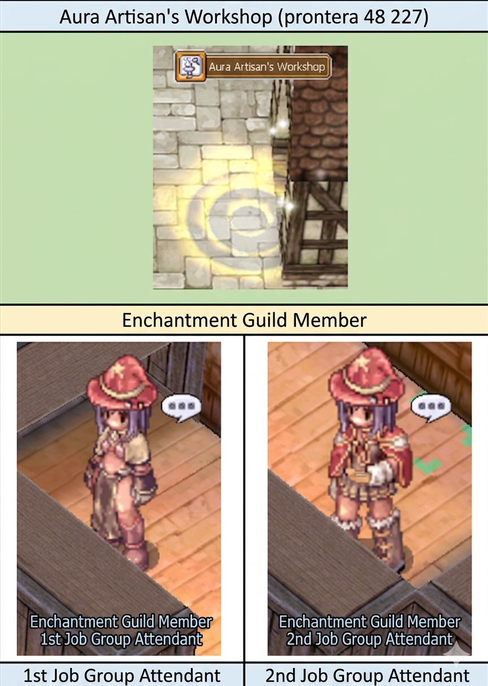
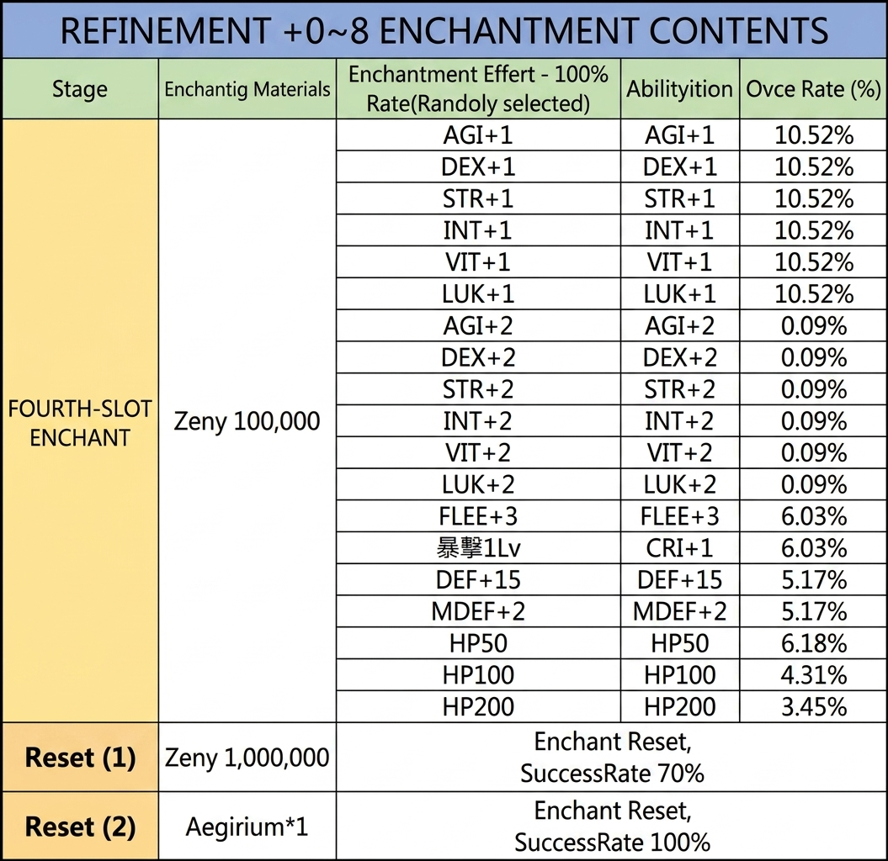
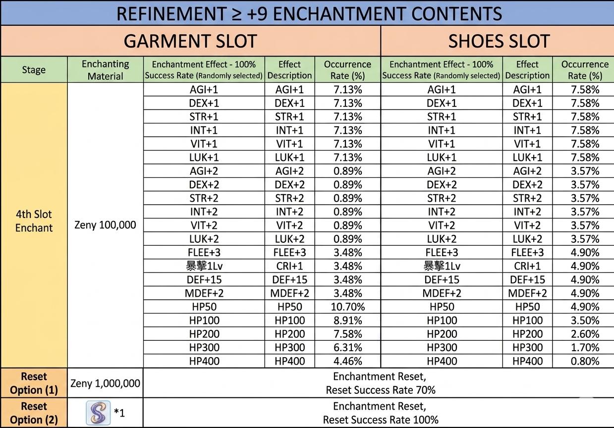
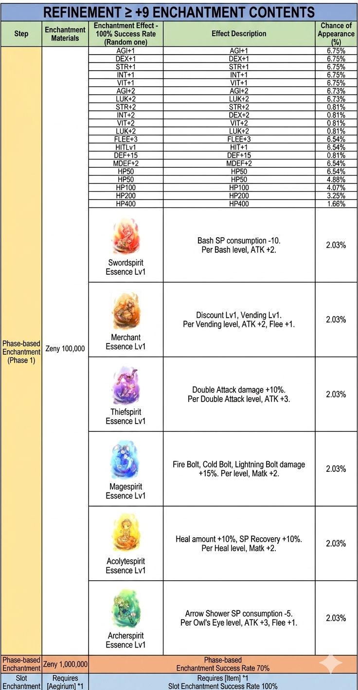

Subjugation Squad Enchant (征伐隊-專屬附魔)
Exklusive Enchant-Pool für das 60MD-Equipment der Subjugation-Squad-Memorial-Dungeons — applied über die Enchant Association in Prontera.
📍 NPC & Standort
Enchant Association (附魔協會)
Position: prt_in 135/35
Navigate: /navi prt_in 135/35
Funktion: Enchantet Memorial-Dungeon-Equipment mit dem zugehörigen exklusiven Ability-Pool.

📋 Aura Artisan's Workshop und NPC Übersicht — Deutsch aufklappen
Dieses Bild zeigt den Eingang zur Aura Artisan's Workshop in Prontera sowie die zwei dort ansässigen NPCs für Verzauberungen.
- Ort: Aura Artisan's Workshop (prontera 48 227)
- NPC: Enchantment Guild Member (1st Job Group Attendant)
- NPC: Enchantment Guild Member (2nd Job Group Attendant)
Die NPCs dienen als Ansprechpartner für Verzauberungsdienste, unterteilt in Job-Gruppen.
🎯 Zielausrüstung
Dieser Enchant-Pool gilt für 60er-Memorial-Dungeon-Equipment der Subjugation Squad-Serie. Parallele Pools:
- 70MD Expedition Enchant (遠征隊)
- 80MD Annihilation Enchant (殲滅隊)
📋 Ability-Listen
Alle verfügbaren Enchants in den offiziellen Tabellen:

📋 Verzauberungsinhalte für Veredelung +0~8 — Deutsch aufklappen
Diese Tabelle zeigt die Kosten, Erfolgsraten und möglichen Boni für die Verzauberung des vierten Ausrüstungsslots sowie die Optionen zum Zurücksetzen der Verzauberungen.
| Phase | Verzauberungsmaterialien | Verzauberungseffekt | Fähigkeit | Erfolgsrate (%) |
|---|---|---|---|---|
| FOURTH-SLOT ENCHANT | Zeny 100,000 | AGI+1 | AGI+1 | 10.52% |
| FOURTH-SLOT ENCHANT | Zeny 100,000 | DEX+1 | DEX+1 | 10.52% |
| FOURTH-SLOT ENCHANT | Zeny 100,000 | STR+1 | STR+1 | 10.52% |
| FOURTH-SLOT ENCHANT | Zeny 100,000 | INT+1 | INT+1 | 10.52% |
| FOURTH-SLOT ENCHANT | Zeny 100,000 | VIT+1 | VIT+1 | 10.52% |
| FOURTH-SLOT ENCHANT | Zeny 100,000 | LUK+1 | LUK+1 | 10.52% |
| FOURTH-SLOT ENCHANT | Zeny 100,000 | AGI+2 | AGI+2 | 0.09% |
| FOURTH-SLOT ENCHANT | Zeny 100,000 | DEX+2 | DEX+2 | 0.09% |
| FOURTH-SLOT ENCHANT | Zeny 100,000 | STR+2 | STR+2 | 0.09% |
| FOURTH-SLOT ENCHANT | Zeny 100,000 | INT+2 | INT+2 | 0.09% |
| FOURTH-SLOT ENCHANT | Zeny 100,000 | VIT+2 | VIT+2 | 0.09% |
| FOURTH-SLOT ENCHANT | Zeny 100,000 | LUK+2 | LUK+2 | 0.09% |
| FOURTH-SLOT ENCHANT | Zeny 100,000 | FLEE+3 | FLEE+3 | 6.03% |
| FOURTH-SLOT ENCHANT | Zeny 100,000 | CRI+1 | CRI+1 | 6.03% |
| FOURTH-SLOT ENCHANT | Zeny 100,000 | DEF+15 | DEF+15 | 5.17% |
| FOURTH-SLOT ENCHANT | Zeny 100,000 | MDEF+2 | MDEF+2 | 5.17% |
| FOURTH-SLOT ENCHANT | Zeny 100,000 | HP50 | HP50 | 6.18% |
| FOURTH-SLOT ENCHANT | Zeny 100,000 | HP100 | HP100 | 4.31% |
| FOURTH-SLOT ENCHANT | Zeny 100,000 | HP200 | HP200 | 3.45% |
| Reset (1) | Zeny 1,000,000 | Enchant Reset | Enchant Reset | SuccessRate 70% |
| Reset (2) | Aegirium*1 | Enchant Reset | Enchant Reset | SuccessRate 100% |
Die Tabelle listet die Wahrscheinlichkeiten für die Zufallsauswahl bei der Verzauberung des vierten Slots sowie die Kosten für das Zurücksetzen auf.

📋 Verzauberungsinhalte für Ausrüstung mit einer Veredelung von mindestens +9 — Deutsch aufklappen
Diese Tabelle zeigt die möglichen Verzauberungseffekte und deren Auftretenswahrscheinlichkeiten für den 4. Slot von Ausrüstung (Garment und Shoes) bei einer Veredelung von +9 oder höher.
| Stufe | Verzauberungsmaterial | Garment Slot: Effekt | Garment Slot: Wahrscheinlichkeit (%) | Shoes Slot: Effekt | Shoes Slot: Wahrscheinlichkeit (%) |
|---|---|---|---|---|---|
| 4th Slot Enchant | Zeny 100,000 | AGI+1 | 7.13% | AGI+1 | 7.58% |
| 4th Slot Enchant | Zeny 100,000 | DEX+1 | 7.13% | DEX+1 | 7.58% |
| 4th Slot Enchant | Zeny 100,000 | STR+1 | 7.13% | STR+1 | 7.58% |
| 4th Slot Enchant | Zeny 100,000 | INT+1 | 7.13% | INT+1 | 7.58% |
| 4th Slot Enchant | Zeny 100,000 | VIT+1 | 7.13% | VIT+1 | 7.58% |
| 4th Slot Enchant | Zeny 100,000 | LUK+1 | 7.13% | LUK+1 | 7.58% |
| 4th Slot Enchant | Zeny 100,000 | AGI+2 | 0.89% | AGI+2 | 3.57% |
| 4th Slot Enchant | Zeny 100,000 | DEX+2 | 0.89% | DEX+2 | 3.57% |
| 4th Slot Enchant | Zeny 100,000 | STR+2 | 0.89% | STR+2 | 3.57% |
| 4th Slot Enchant | Zeny 100,000 | INT+2 | 0.89% | INT+2 | 3.57% |
| 4th Slot Enchant | Zeny 100,000 | VIT+2 | 0.89% | VIT+2 | 3.57% |
| 4th Slot Enchant | Zeny 100,000 | LUK+2 | 0.89% | LUK+2 | 3.57% |
| 4th Slot Enchant | Zeny 100,000 | FLEE+3 | 3.48% | FLEE+3 | 4.90% |
| 4th Slot Enchant | Zeny 100,000 | CRI+1 | 3.48% | CRI+1 | 4.90% |
| 4th Slot Enchant | Zeny 100,000 | DEF+15 | 3.48% | DEF+15 | 4.90% |
| 4th Slot Enchant | Zeny 100,000 | MDEF+2 | 3.48% | MDEF+2 | 4.90% |
| 4th Slot Enchant | Zeny 100,000 | HP50 | 10.70% | HP50 | 4.90% |
| 4th Slot Enchant | Zeny 100,000 | HP100 | 8.91% | HP100 | 3.50% |
| 4th Slot Enchant | Zeny 100,000 | HP200 | 7.58% | HP200 | 2.60% |
| 4th Slot Enchant | Zeny 100,000 | HP300 | 6.31% | HP300 | 1.70% |
| 4th Slot Enchant | Zeny 100,000 | HP400 | 4.46% | HP400 | 0.80% |
| Reset Option (1) | Zeny 1,000,000 | Enchantment Reset | 70% | Enchantment Reset | 70% |
| Reset Option (2) | Item *1 | Enchantment Reset | 100% | Enchantment Reset | 100% |
Die Erfolgsrate für das Zurücksetzen (Reset) ist bei Option (1) 70% und bei Option (2) mit dem speziellen Item 100%.

📋 Verzauberungsinhalte für Ausrüstung mit Veredelung ≥ +9 — Deutsch aufklappen
Diese Tabelle listet die möglichen Effekte und deren Wahrscheinlichkeiten für die Verzauberung von Ausrüstungsgegenständen mit einer Veredelungsstufe von mindestens +9 auf.
| Schritt | Verzauberungsmaterialien | Verzauberungseffekt - 100% Erfolgsrate (Zufällig) | Effektbeschreibung | Erscheinungswahrscheinlichkeit (%) |
|---|---|---|---|---|
| Phase-based Enchantment (Phase 1) | Zeny 100,000 | AGI+1 | AGI+1 | 6.75% |
| Phase-based Enchantment (Phase 1) | Zeny 100,000 | DEX+1 | DEX+1 | 6.75% |
| Phase-based Enchantment (Phase 1) | Zeny 100,000 | STR+1 | STR+1 | 6.75% |
| Phase-based Enchantment (Phase 1) | Zeny 100,000 | INT+1 | INT+1 | 6.75% |
| Phase-based Enchantment (Phase 1) | Zeny 100,000 | VIT+1 | VIT+1 | 6.75% |
| Phase-based Enchantment (Phase 1) | Zeny 100,000 | AGI+2 | AGI+2 | 6.73% |
| Phase-based Enchantment (Phase 1) | Zeny 100,000 | LUK+2 | LUK+2 | 6.73% |
| Phase-based Enchantment (Phase 1) | Zeny 100,000 | STR+2 | STR+2 | 0.81% |
| Phase-based Enchantment (Phase 1) | Zeny 100,000 | INT+2 | DEX+2 | 0.81% |
| Phase-based Enchantment (Phase 1) | Zeny 100,000 | VIT+2 | VIT+2 | 0.81% |
| Phase-based Enchantment (Phase 1) | Zeny 100,000 | LUK+2 | LUK+2 | 0.81% |
| Phase-based Enchantment (Phase 1) | Zeny 100,000 | FLEE+3 | FLEE+3 | 6.54% |
| Phase-based Enchantment (Phase 1) | Zeny 100,000 | HITLv1 | HIT+1 | 6.54% |
| Phase-based Enchantment (Phase 1) | Zeny 100,000 | DEF+15 | DEF+15 | 0.81% |
| Phase-based Enchantment (Phase 1) | Zeny 100,000 | MDEF+2 | MDEF+2 | 6.54% |
| Phase-based Enchantment (Phase 1) | Zeny 100,000 | HP50 | HP50 | 6.54% |
| Phase-based Enchantment (Phase 1) | Zeny 100,000 | HP50 | HP50 | 4.88% |
| Phase-based Enchantment (Phase 1) | Zeny 100,000 | HP100 | HP100 | 4.07% |
| Phase-based Enchantment (Phase 1) | Zeny 100,000 | HP200 | HP200 | 3.25% |
| Phase-based Enchantment (Phase 1) | Zeny 100,000 | HP400 | HP400 | 1.66% |
| Phase-based Enchantment (Phase 1) | Zeny 100,000 | Swordspirit Essence Lv1 | Bash SP consumption -10. Per Bash level, ATK +2. | 2.03% |
| Phase-based Enchantment (Phase 1) | Zeny 100,000 | Merchant Essence Lv1 | Discount Lv1, Vending Lv1. Per Vending level, ATK +2, Flee +1. | 2.03% |
| Phase-based Enchantment (Phase 1) | Zeny 100,000 | Thiefspirit Essence Lv1 | Double Attack damage +10%. Per Double Attack level, ATK +3. | 2.03% |
| Phase-based Enchantment (Phase 1) | Zeny 100,000 | Magespirit Essence Lv1 | Fire Bolt, Cold Bolt, Lightning Bolt damage +15%. Per level, Matk +2. | 2.03% |
| Phase-based Enchantment (Phase 1) | Zeny 100,000 | Acolytespirit Essence Lv1 | Heal amount +10%, SP Recovery +10%. Per Heal level, Matk +2. | 2.03% |
| Phase-based Enchantment (Phase 1) | Zeny 100,000 | Archerspirit Essence Lv1 | Arrow Shower SP consumption -5. Per Owl's Eye level, ATK +3, Flee +1. | 2.03% |
| Phase-based Enchantment | Zeny 1,000,000 | Phase-based Enchantment Success Rate 70% | Phase-based Enchantment Success Rate 70% | None |
| Slot Enchantment | Requires [Aegirium] *1 | Requires [Item] *1 Slot Enchantment Success Rate 100% | Requires [Item] *1 Slot Enchantment Success Rate 100% | None |
Die Tabelle beschreibt die Kosten und Wahrscheinlichkeiten für Verzauberungen an Gegenständen, die bereits auf mindestens +9 veredelt wurden.
💡 Praxis-Tipps
- 60MD zuerst abschließen: Ohne das Memorial-Dungeon-Clear kein Zugang zum passenden Equipment — siehe Memorial-Dungeons
- Progressions-Pfad: 60MD → 70MD → 80MD — Enchants wachsen mit der Dungeon-Stufe
- Re-Enchant einplanen: Wenn der erste Roll nicht passt, Materialien für Re-Enchants einplanen
⚠️ Hinweise
- Gravity behält sich Änderungen an Mechaniken und Enchant-Raten vor.
- Mit Patches können Pools angepasst werden — aktueller Stand auf der Originalseite.